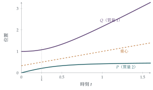

STEP III 2004、第11問
先に進む前に問題を読んでおこう。問題は STEP Support Programme の問題データベースにある： step.maths.org/questions/04-s3-q11
導入
2つの物体が互いに引き合ったり反発し合ったりする。地球と月、2つの恒星、陽子と電子がその例である。それぞれの物体の運動はもう一方の位置に依存するので、方程式は連立しており、2つの運動を同時に求めなければならないように見える。ニュートン（Newton）による大きな簡略化は、変数を取り替えることであった。2つの位置の代わりに、まったく力がはたらいていないかのように運動する重心（centre of mass）と、質量を修正した1個の粒子のように運動する相対距離（separation）を用いるのである。こうして1つの難しい問題が2つのやさしい問題になる。
この問題では、直線上の2粒子についてこの分離を実行する。その途中で小さな奇跡が起こる。相対距離が \(t\) の2次式の平方根になるのである。その理由は、出題された問題そのものとはまったく関係がなく、平面内の運動とこそ深く関係している。
取りかかる前に
それぞれの粒子についてニュートンの第2法則を書き下せ。それぞれの力はどちら向きにはたらくか。
力は斥力なので、（左側にある）\(P\) を左向きに、（右側にある）\(Q\) を右向きに押す。 \[2\ddot x_1 = -\frac{2}{z^3}, \qquad 1 \cdot \ddot x_2 = +\frac{2}{z^3}.\] どちらの式も \(z = x_2 - x_1\) を含むので、これらは連立している。
順を追って解く
段階 1 相対距離
2つの方程式をどのように組み合わせれば \(z\) だけを含む式になるか。
辺々引くと、\(\ddot z = \ddot x_2 - \ddot x_1 = \frac{2}{z^3} + \frac{1}{z^3} = \frac{3}{z^3}\) である。■
相対距離は、力 \(\frac{2}{z^3}\) で押される質量 \(\frac23\) の1個の粒子のようにふるまう。数 \(\frac23 = \frac{2 \times 1}{2 + 1}\) は換算質量（reduced mass）\(\frac{m_1m_2}{m_1 + m_2}\) である。
段階 2 相対距離に対するエネルギー
\(\ddot z = v\frac{\mathrm{d}v}{\mathrm{d}z}\) として変数を分離し、積分せよ。\(z\) と \(v = \dot z\) の初期値は何か。
\(v\frac{\mathrm{d}v}{\mathrm{d}z} = \frac{3}{z^3}\) を積分すると \(\frac12v^2 = -\frac{3}{2z^2} + C\) となる。初めに \(z = 1\)、\(\dot z = \dot x_2 - \dot x_1 = 0 - 1 = -1\) であるから \(\frac12 = -\frac32 + C\) となり、\(C = 2\) を得る。 \[v^2 = 4 - \frac{3}{z^2}.\] （これは相対距離に対するエネルギー保存（conservation of energy）である。換算質量1あたりの運動エネルギーとポテンシャルエネルギー \(\frac{3}{2z^2}\) の和が一定となる。）
段階 3 意外なほど簡単な解
示すべき答えは \(z^2 = 4t^2 - 2t + 1\) である。そこで \(z\) の代わりに \(w = z^2\) を考えよ。\(\dot w^2\) を \(w\) で表すとどうなるか。
\(w = z^2\) とすると \(\dot w = 2z\dot z\) であるから、 \[\dot w^2 = 4z^2\dot z^2 = 4z^2\Bigl(4 - \frac{3}{z^2}\Bigr) = 16w - 12.\] これを微分すると \(2\dot w\ddot w = 16\dot w\) となるので、（\(\dot w \neq 0\) である限り）\(\ddot w = 8\) である。したがって \(w\) は \(t\) の2次式 \(w = 4t^2 + \alpha t + \beta\) である。初めに \(w = 1\)、\(\dot w = 2z\dot z = -2\) であるから \(\beta = 1\)、\(\alpha = -2\) となり、 \[z = \sqrt{4t^2 - 2t + 1}. \qed\] （直接確かめることもできる：\(\dot w^2 = (8t - 2)^2 = 64t^2 - 32t + 4 = 16(4t^2 - 2t + 1) - 12\)。）2粒子は \(t = \frac14\) で最も近づき、そのとき \(z = \frac{\sqrt3}{2}\) である。その後は永遠に離れていく。
段階 4 重心
\(2x_1 + x_2\) はどのような方程式を満たすか。なぜそれが調べるべき自然な組合せなのか。
2つの運動方程式を加えると \(2\ddot x_1 + \ddot x_2 = -\frac{2}{z^3} + \frac{2}{z^3} = 0\) となる。2つの力は大きさが等しく向きが反対である（ニュートンの第3法則）から、全運動量（total momentum）\(2\dot x_1 + \dot x_2\) は一定である。その初期値は \(2 \times 1 + 0 = 2\) であり、\(2x_1 + x_2\) の初期値は \(1\) であるから、 \[2x_1 + x_2 = 1 + 2t.\] 重心 \(\frac{2x_1 + x_2}{3}\) は速さ \(\frac23\) で一様に動く。これを \(x_2 - x_1 = z\) と組み合わせると、 \[x_1 = \frac{1 + 2t - \sqrt{4t^2 - 2t + 1}}{3}, \qquad x_2 = \frac{1 + 2t + 2\sqrt{4t^2 - 2t + 1}}{3}. \qed\]

振り返り
変数を取り替えて連立を解きほぐす。方程式の差は \(z\) だけを含み、重みつきの和は重心だけを含んでいた。
エネルギー積分。\(\ddot z = v\frac{\mathrm{d}v}{\mathrm{d}z}\) と書くことで、2階の方程式が1階の方程式、すなわちエネルギー保存の式に変わった。
未知関数を取り替える。\(z\) に対する方程式は扱いにくかったが、\(z^2\) に対する方程式は自明であった。
背後にある数学
なぜ \(z^2\) は2次式になるのか
\(\ddot z = k/z^3\) の形の任意の力の法則について、同じ計算により \(\frac{\mathrm{d}^2}{\mathrm{d}t^2}(z^2) = 2\dot z^2 + 2z\ddot z = 2\dot z^2 + \frac{2k}{z^2} =\) 定数となる。\(\frac12\dot z^2 + \frac{k}{2z^2}\) が保存されるエネルギーだからである。したがって \(z^2\) はつねに \(t\) の2次式である。それはなぜか。
隠れた理由はこうである。平面内を、力を受けずに直線上を一定の速さで運動する粒子を考える。原点からの距離 \(r\) は、\(r^2 = (x_0 + at)^2 + (y_0 + bt)^2\) であるから、\(r^2 = (\text{2次式、変数 } t)\) を満たす。また極座標（polar coordinates）では動径方向の運動方程式は \(\ddot r - r\dot\theta^2 = 0\) であり、角運動量（angular momentum）\(h = r^2\dot\theta\) が一定であることから、これは \[\ddot r = \frac{h^2}{r^3}.\] となる。逆3乗の斥力は、まさに隠れた回転運動による遠心力（centrifugal）の効果なのである。この問題では、\(z^2 = 4t^2 - 2t + 1 = (2t - \frac12)^2 + \frac34\) は、原点から距離 \(\frac{\sqrt3}{2}\) のところを通る直線上を速さ \(2\) で動く点の、原点からの距離の2乗である。1次元で反発し合う粒子は、2次元における自由運動の影なのである。
二体問題
この問題の方法は、2物体間の力が相対距離だけに依存し、2物体を結ぶ直線に沿ってはたらくものであれば、1次元に限らず3次元でも通用する。重心は等速運動をし、相対位置ベクトル \(\mathbf{r}\) は \(\mu = \frac{m_1m_2}{m_1 + m_2}\) として \(\mu\ddot{\mathbf{r}} = \mathbf{F}(\mathbf{r})\) に従う。重力の場合、これはケプラー問題（Kepler problem）であり、ニュートンが『Principia』（プリンキピア）で解いた。相対位置は楕円、放物線、双曲線のいずれかを描く。地球と太陽はともに共通の重心のまわりを公転しており、その重心は太陽の内部にある。地球と月は地球の中心から約 \(4700\) km の点のまわりを回っており、その点は地球の内部にあるが中心からはかなり離れている。地球が月ごとに揺れ動くのはこのためである。天文学者は、恒星のまさにこの揺れを検出することで、ほかの恒星のまわりの惑星を発見している。
1969年、Francesco Calogero は、直線上にある多数の粒子が逆2乗のポテンシャル（すなわち逆3乗の力）で互いに反発し合う系を研究し、驚くべきことに、粒子の個数によらずこの系が厳密に解けることを発見した。1975年、Jürgen Moser は、時間発展しても固有値（eigenvalues）が一定に保たれる行列、すなわち 第 7.7 節 のLax 対（Lax pairs）を用いてその理由を説明した。Calogero–Moser 系は現在、可積分系（integrable system）、つまり完全に解けるだけの十分な数の保存量をもつ系の中心的な例となっており、力学をランダム行列、場の量子論、ソリトン（solitons）の理論と結びつけている。
思考のスキル
2つの量が連立しているときは、連立していない組合せを探せ。適切な定数で重みをつけた和や差によって、問題が独立な部分に分かれることが多い。
重心座標と相対座標はその最初の例である。大学では同じ考え方が、行列の対角化（diagonalising）（基準振動（normal modes）、第 11.2 節）として、偏微分方程式（partial differential equations）の変数分離（separation of variables）として、また量子力学の中で現れる。
次の一歩
糸で結ばれた2つの質点。STEP III 2023、第9問 （OCRが配布している2023年の問題一式、zipファイル） に挑戦せよ。糸で結ばれた2粒子の運動を、重心を用いて分離しながら追う問題である。一方の粒子が後ろ向きに動くのはいつかに注目せよ。
引力。力を引力 \(\frac{2}{z^3}\) にして同じ問題を解け。\(z^2\) がやはり \(t\) の2次式であることを示し、2粒子が衝突する時刻を求めよ。
隠れた平面。この問題の運動について、原点からの距離が \(z(t)\) となる平面内の直線と、掃過される角 \(\theta(t)\) を求めよ。\(z^2\dot\theta\) が一定であり、\((z^2\dot\theta)^2 = 3\) であることを確かめよ。
ケプラーの第3法則。質量 \(m_1\) と \(m_2\) の2つの恒星が、距離 \(a\) を保ちながら重力のもとで重心のまわりを円運動している。周期 \(T\) が \(T^2 = \frac{4\pi^2a^3}{G(m_1 + m_2)}\) を満たすことを示せ。
さらに学ぶために
John Taylor, Classical Mechanics（University Science Books）、第8章。二体問題、換算質量、軌道。
Daniel Kleppner & Robert Kolenkow, An Introduction to Mechanics（Cambridge University Press）、第10章、中心力について。
Francesco Calogero, Classical Many-Body Problems Amenable to Exact Treatments（Springer）。意欲的な読者向け：厳密に解ける系の世界。